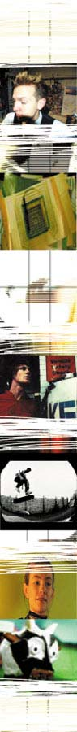

| |
ABC: AS NOISY AS 1,2,3
| |
Prepare to be enlightened and entertained by vivid and candid examples of creativity, as noise canvasses the farthest corners of under-25 imagination in a month worth of sloth-inducing couch-potatodom, all on your favourite network.
| |
ABC TV is airing four noise-related programs - noise [tv], Shortfuse, Rage and The Arts Show - TV being one of many media outlets noise has facilitated to record and broadcast the attitudes and ideas of Australia's young people.
noise's intrepid TV team of Rachel Moss and Thom Corcoran travelled Australia top to bottom to discover and capture what was a surprising amount of raw and largely untapped talent. Young, often opinionated people with refreshing artistic endeavours and ideals, who also present and star in their own segments.
noise [tv] airs in amongst the old Recovery timeslot on Saturday mornings, then repeats before Rage at night, to give a frenetic one hour assortment of all noise festival activities, profiling creative people from Western Fitzroy in the Kimberleys to Denmark in Western Australia's south.
"There really are so many levels of artistic expression in this country - we've got graf artists, DJs, painters, writers, comic book artists, filmmakers," recalls Rachel. "Perth artist Jen Lowe did these clever hallway perspective paintings that made it appear to be getting narrower and smaller. She'd then photograph people's reactions as they approached this walkway."
[Lowe appears in Episode 3 of noise [tv]]
While noise [tv] gives broad coverage through profiles, vox pops, (mostly Australian) music clips, short films and other noise bits, Short Fuse dedicates 30 minutes each Friday night to a short film, video and animation showcase, with selected works housed online at noise.net.au.
You'll see shorts like "Fight For Your Blood", an impressive debut for an adlibbed script and a DIY crew made up of four budding movie makers from Sydney's Redfern. It's an insightful and entertaining look at boxing and the blood and sweat of tough inner city living, which even features most of the filmmakers in acting roles.
"I didn't have a clue about film or the movies," says one "Fight&sum" member Nathanial Williams. "Me and my mates didn't know how to act and didn&sbquot have a script, so we just sat down and made the words up. I think I'd like to be an actor now."
The aim of the project being to uncover new talent and encourage fresh creativity on camera, Short Fuse provides short, entertaining and insightful slices of energy, screening everything from animated exploding cow films (by Pierce Davison) to urban skateboard thrillers (by Dean Wells) Check out these films, or forever dwell in a smelly cultural backwater.
ABC's iconic late night music video show Rage follows on from Short Fuse during October and gets particularly noisy on Saturday 27, when clips by young Australian bands and artists get a flogging. In a good way of course.
Then, for an arty half hour with a difference on Thursday nights you can also catch The Arts Show, which neatly profiles some of our best emerging artists from paint and sculpture to theatre and stage.
It's all happening at ABC TV for noise this October, and you can find out more by visiting the ABC noise site. For everything else and the kitchen sink, you'll find it here at noise.net.au.
Return to the ABC TV Project Homepage
(Psst... we reckon you'll also be interested in the ABC RADIO, SBS and E-WORKS Projects)
|
|
|